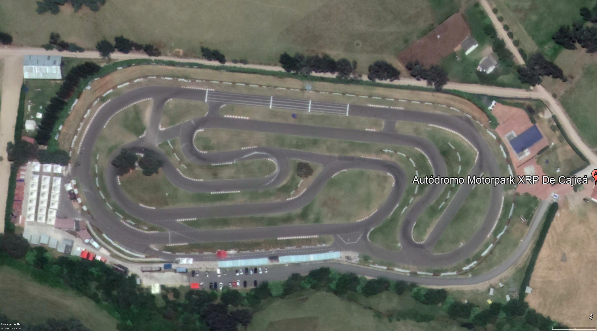

AUTODROMO DE TOCANCIPA

Se realizan carreras desde 1981, utilizándose una serie de trazados distintos dependiendo de
cada situación o carrera. Generalmente para las 6 horas de Bogotá, la más importante competencia
automovilística colombiana,1 se emplea el llamado circuito largo de 2.725 m . El circuito más corto apenas
emplea 1010 m siendo esa la extensión más reciente al incluirse un óvalo en la parte norte del circuito. En
esa zona también se construyeron otros circuitos como el Kartódromo Juan Pablo Montoya y el circuito de
Campercross. Sin embargo el trazado tradicional sigue siendo el de 2.040 m el cual conserva mucho del
trazado original; todos los recorridos tienen en común la recta principal construida desde el principio y
renovada hacia los años 90`s , igualmente la zona de pits, sin embargo esa recta sufre modificaciones para
propósitos varios.
Saber mas>>
AUTODROMO DE XRP

Siendo uno de los mejores circuitos de Colombia y uno de los mas cuidados, es uno de los
circuitos mas queridos por los pilotos Colombianos, sin hablar de su gran variedad de trazados posibles y es
uno de los circuitos que esta en mejor estado de toda Colombia, sin duda un parque de diversiones este
lugar!. Cuenta con una longitud total de 1500mt y un ancho de 9mt con posibilidades de trzados en sentido
horario y sentido anihorario, sin duda un coompleto parque de diversiones, con sus desniveles y curvas
cerradas y curvas raapidas es un circuito muy tecnico y a la vez rapido.
Saber mas>>
KARTODROMO MILAN

La pista del Kartódromo Internacional de Zarzal mide 1.043 metros y reúne todas las
especificaciones técnicas exigidas por la Comisión Internacional de Karting (CIK). Este circuito tambien
cuenta con diferentes variantes a su trazado en sentido horario y sentido antihorario. Cuenta con 5 trazados
posibles y un pequeño sector extra de Motocross para la modalidad de Supermotard. Apesar de que el circuito
cuenta con el mismo asfalto desde su fecha de inaguracion su divertido y tecnico trazado atrae a muchos
pilotos
Saber mas>>